Я родился 9 сентября 1951 года в городе Полоцк Витебской области Белорусской ССР в семье военнослужащего.
Мой отец, Копров Юрий Дмитриевич (1923-1998), с детства мечтал об авиации. Окончив семилетнюю школу, он поступил в Липецкий аэроклуб, а после его окончания – в школу военных летчиков. Началась Великая Отечественная война, и сержант Копров был направлен защищать подступы к Ленинграду и Советское Заполярье в качестве летчика полка ночных бомбардировщиков. Много раз летал он на бомбежку войск противника, на разведку, вывозил в тыл раненых. Награжден орденом «Красной звезды», медалями «За боевые заслуги» и «За оборону Советского Заполярья». За всю войну не был ни разу сбит или ранен. После освобождения Заполярья старший лейтенант Копров был направлен на переучивание на самолет-штурмовик, но, пока длилась эта учеба, наступил День Победы.
В самом конце войны мой отец познакомился с мамой, Валентиной Никифоровной (1927-2007).
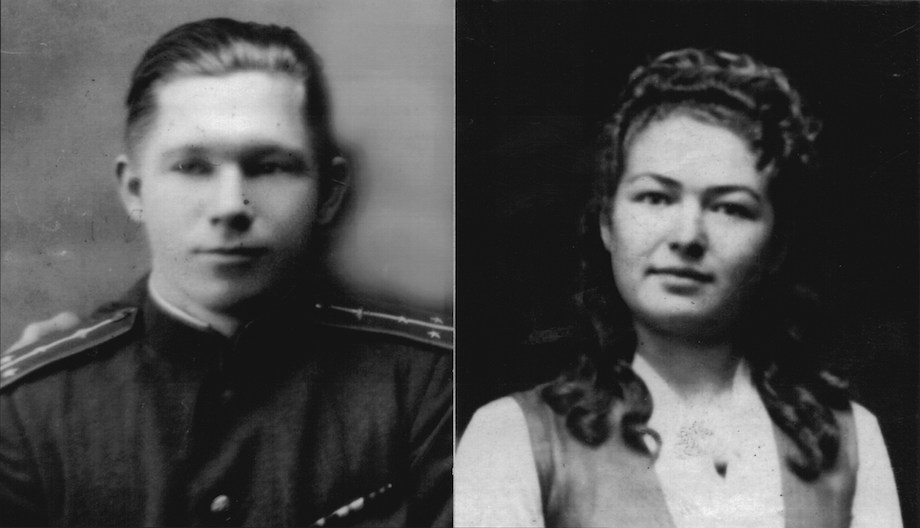В мае 1946 года у них родилась дочь Татьяна, а спустя пять лет появился я.
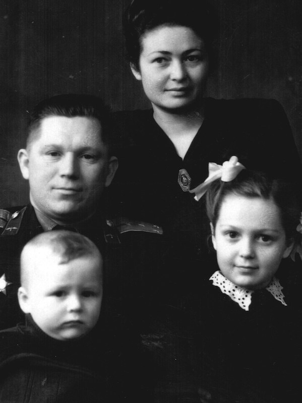Моим родителям удалось создать идеальную семью: жили в послевоенные годы трудно (папа все время на работе, мама – с двумя детьми, квартиры съемные и так далее), но дружно, и свою «золотую свадьбу» они отмечали в широком кругу детей, внуков, правнучки и близких.


Поскольку после войны отец продолжал летать, семья путешествовала по всему Советскому Союзу: …Полоцк (в районе которого я родился) – Казань – Миргород – Орша.
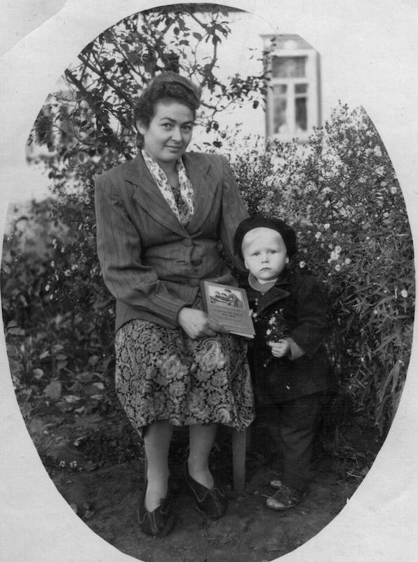Судя по книге, которую держит в руке мама («Украинська мова»), фото сделано на Украине. А учиться я пошел в белорусскую школу. Так что еще в раннем детстве имел возможность познакомился с этими двумя языками (вот откуда у меня тяга к изучению иностранных языков!).
По причине малого возраста я хорошо запомнил только нашу жизнь в военном городке Балбасово под Оршей, где тогда базировалась дивизия дальних бомбардировщиков.
Можно сказать, что моя сознательная жизнь началась под мощный гул двигателей и турбин ракетоносцев, способных нанести ответный удар по территории любого агрессора. Я тоже мечтал стать летчиком, но, когда пошел в школу, оказалось, что мне необходимо постоянно носить очки, и с этой мечтой пришлось проститься. Однако уважение к армии, понимание ее роли в обеспечении независимой и мирной жизни страны осталось со мной на всю жизнь. Забегая вперед, скажу, что мне все-таки удалось поносить такую же, как у отца, форму, побывать на военных аэродромах, я даже неоднократно поднимался в воздух в качестве командира десантно-штурмовых групп.

Много лет потом мне снились «волшебные» для мальчишек места – аэродром, стрельбище, где мы собирали гильзы и пули всех видов и калибров, авиационная свалка с деталями от самолетов разных марок, места боев с сохранившимися блиндажами и окопами, разбросанным вооружением. Все это я тащил домой (а мама потом со скандалом выбрасывала). Этот интерес к истории и реликвиям Великой Отечественной войны сохранился у меня до сих пор, передался и сыну.

Я (в середине) и моя команда.
Я мечтал побывать еще раз в нашем гарнизоне, но пока не довелось, хотя несколько раз по пути на конференции в Минск проезжал через Оршу, гулял по привокзальной территории. А потом нашел сайт http://balbasovo.na.by/garnizon/402tbap/index.php, посвященный Балбасово, и в подробностях увидел все знакомые места на фото и видео (огромное спасибо создателям сайта!).
В 1960 году Н. Хрущев инициировал фактическое уничтожение стратегической авиации, и мой отец – майор, командир отряда, летчик первого класса – в 37 лет был вынужден уйти в запас. У нас сохранились его летные книжки, согласно которым он в 4099 полетах на самолетах По-2, Р-5, ИЛ-2, Ли-2, Ту-4 и Ту-16 налетал 3349 часов 3 минуты. Награжден орденами «Красного Знамени», «Отечественной Войны», двумя орденами «Красной Звезды», медалями «За боевые заслуги», «За оборону Советского Заполярья» и многими другими.
В качестве места жительства нашей семьи был выбран Воронеж, и в третий класс я пошел в среднюю школу № 9.
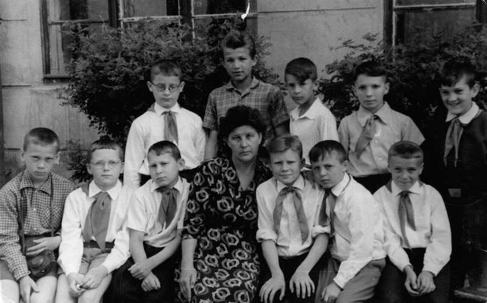Учиться мне всегда нравилось, поэтому школьные годы я вспоминаю с удовольствием. Как правило, и в четверти, и в году у меня бывало не больше одной-двух четверок, и то потому, что я никогда не стремился быть «круглым отличником». Я любил все предметы, кроме, как ни странно, русского языка. Как потом понял, дело было в учительнице, которая преподавала его крайне формально и сухо.
Интерес к изучению иностранных языков проявился у меня еще в младших классах. Как-то летом мне попал в руки школьный учебник немецкого языка, и мне очень захотелось научиться читать незнакомые слова. За время каникул я справился с этой задачей и решил продолжить изучение немецкого языка. Но проучился я в «немецком» классе всего полгода: его поделили на немецкую и английскую группы, и я попал в английскую. Этот язык мне тоже понравился, я стал заниматься самостоятельно, намного опережая программу. Уже в восьмом классе мог свободно читать неадаптированную литературу и английскую газету “The Morning Star”. В десятом классе я был вообще освобожден от посещения уроков по английскому языку и много времени отдавал углубленному изучению математики (наш класс тогда называли математическим). Я никак не мог выбрать профиль своей дальнейшей учебы – физико-математический или гуманитарный, поскольку еще с третьего класса меня очень увлекла радиоэлектроника (это увлечение сохранилось на всю жизнь).
Получив серебряную медаль и победив на городской олимпиаде по английскому языку, я в 1968 году поступил на английское отделение факультета романо-германской филологии Воронежского государственного университета.

Мои научные интересы определились еще на третьем курсе. В то время все специальные предметы у нас читались на английском языке, и больше всего мне нравилась теоретическая грамматика, которую вела доцент Юлия Вячеславовна Ушакова. У нее я и стал писать курсовую работу, которая потом переросла в дипломную: «Синонимия причинно-следственных конструкций в английском языке». Юлия Вячеславовна тогда общалась с заведующим кафедрой русского языка филологического факультета профессором Игорем Павловичем Распоповым, и через нее я получил возможность ознакомиться с новаторскими грамматическими идеями известного ученого. По материалам дипломной работы совместно с Ю.В. Ушаковой была написана статья – моя первая научная публикация (вышла в 1974 году). Учился я легко, с интересом, поэтому получил «красный диплом» и рекомендацию в аспирантуру.
Рядом со мной училась девушка Наташа, все пять лет мы дружили, а после окончания университета в 1973 году поженились. Сразу скажу, что сейчас у нас двое детей (Оля и Дима), уже есть две внучки (Саша и Алена).
В это время осложнилась обстановка на Дальнем Востоке страны, и меня, как многих выпускников университета, окончивших военную кафедру, призвали на два года в армию.
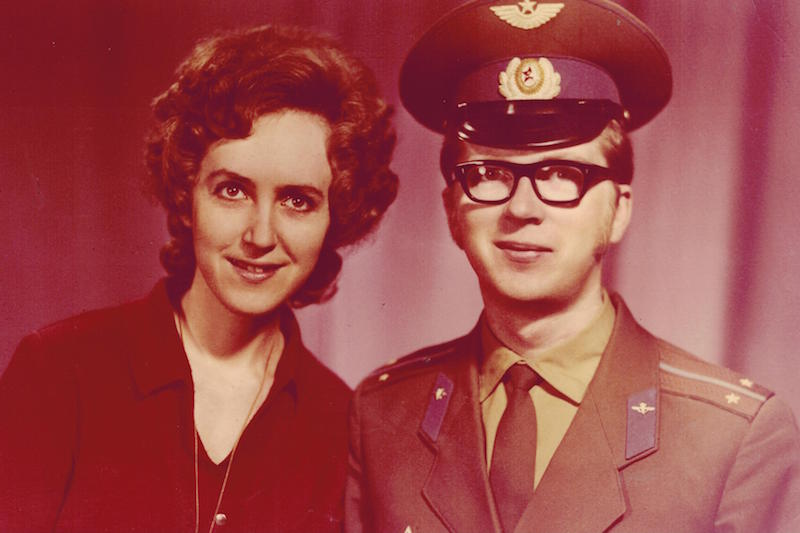Так я оказался командиром взвода 1-ой роты 1-го батальона десантно-штурмовой бригады, которая дислоцировалась в Амурской области на станции Магдагачи. К службе в армии я был морально и физически готов: военную кафедру окончил с отличием, любил охоту и рыбалку, жизнь в походно-полевых условиях, и все это мне очень пригодилось.

Служить мне нравилось, хотя и было тяжело: все время многодневные учения в тайге, где зимой до -45, а летом – до +35; регулярные дневные и ночные стрельбы (готовили нас хорошо, боеприпасов не жалели), пятидесятикилометровые марш-броски, десантирование с вертолетов и т.д.
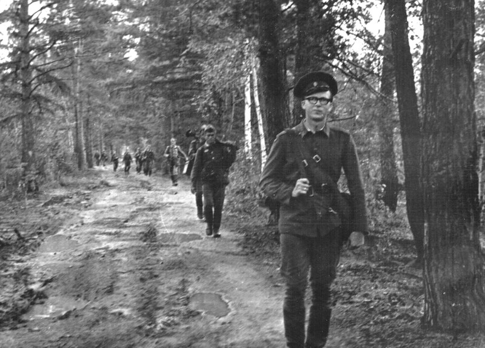Я гордился тем, что, как и отец, носил офицерскую форму с голубыми просветами и петлицами, часто летал на вертолетах и, как в детстве в гарнизоне Балбасово, дышал на аэродромах воздухом с запахом авиационного керосина.

В общем, прошел хорошую школу жизни, необходимую любому настоящему мужчине! Сравните: мой отец в 50-е, я в 70-е, мой сын в 2000-е годы (на военных сборах).
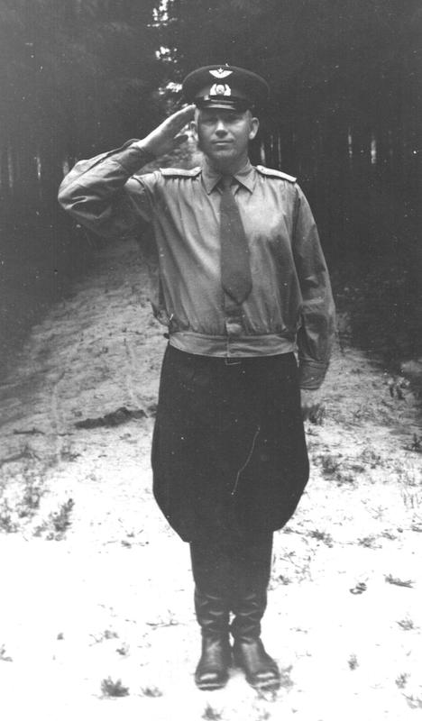 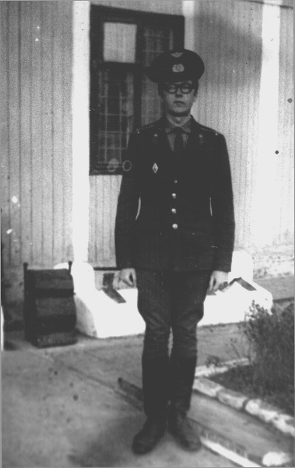
Своих планов – поступить после службы в аспирантуру – я не менял, поэтому продолжал читать литературу по лингвистике, книги на английском языке, собирал фактический материал для будущей диссертации. При любой возможности старался расширить знания по второму – французскому – языку.

Из-за Берлинского кризиса 1975 года нашу демобилизацию задержали на несколько месяцев, и в Воронеж мы вернулись, когда поступать в аспирантуру было уже поздно. Я пошел работать переводчиком в Специальное конструкторское бюро прессов и прикрепился к кафедре английского языка в качестве соискателя.
Наша совместная работа с доцентом Ю.В. Ушаковой продолжилась. После сдачи кандидатских экзаменов по французскому языку и философии встал вопрос о поступлении в аспирантуру. Предполагалось, что я продолжу исследовать английский синтаксис в русле идей И.П. Распопова, но он в тот момент оказался перегружен аспирантами и соискателями, и мне посоветовали обратиться к профессору З.Д. Поповой. Зинаида Даниловна, посмотрев мои материалы, сказала, что согласна принять меня, но направление исследований придется изменить. Тогда только начал развиваться семантический синтаксис, и моя тема должна была быть связана с типологией предложения русского и английского языков. Так русский язык попал в сферу моих научных интересов, чтобы уже никогда не уходить из нее.
Я поступил в заочную аспирантуру по специальности «общее языкознание» при кафедре общего языкознания и стилистики филологического факультета ВГУ и с энтузиазмом начал работать над новой темой.
Мне со студенческих лет нравилась профессия преподавателя вуза. И в 1977 году я был избран по конкурсу на должность преподавателя кафедры русского языка для иностранных учащихся основных факультетов ВГУ, где и работаю по настоящее время, последовательно пройдя все ступени – преподавателя, старшего преподавателя, доцента, профессора, заведующего кафедрой.
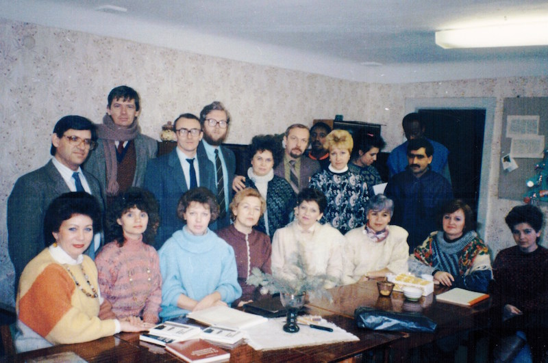Когда работа над диссертацией была почти закончена, выяснилось, что в связи с переформированием диссертационного совета защищаться мне придется по специальности не «общее языкознание», а «русский язык». Так весь материал, собранный по английскому синтаксису, оказался не востребован, но, правда, не навсегда.
В июне 1980 года состоялась защита кандидатской диссертации, а уже в августе я вышел на работу в должности старшего преподавателя кафедры и заместителя декана по учебной работе с иностранными учащимися ВГУ (на общественных началах). Работа в деканате занимала не только все остававшееся от занятий время, но и вечера, праздничные и выходные дни (кто знаком с этой деятельностью, тот поймет, о чем я говорю). К тому же, у нас на руках была годовалая дочь, а обе бабушки еще работали.
Но научные занятия по своей перспективной теме я все-таки старался продолжать, использовал полученные результаты в обучении английских стажеров, готовил учебно-методические разработки.
После присвоения мне звания доцента в 1984 году меня вместе с семьей командировали на три года в Будапешт, в Филиал Института русского языка имени А.С. Пушкина при Доме советской науки и культуры, где я заведовал сразу двумя секторами – кафедр русского языка венгерских университетов и заочного повышения квалификации преподавателей.
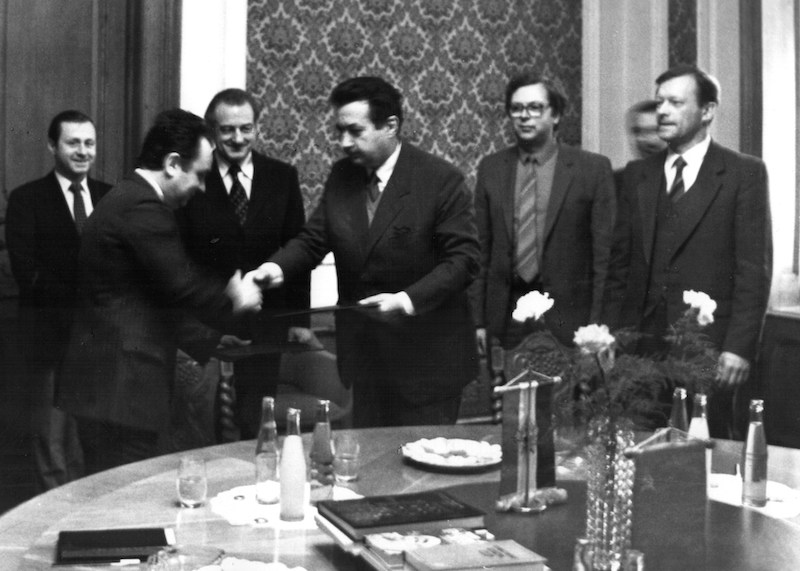Этот период был очень плодотворным во всех отношениях: я установил творческие контакты со всеми кафедрами, с их заведующими и ведущими преподавателями-русистами (эти связи сохранились до сих пор), много ездил по стране с лекциями, сопровождал приглашенных советских специалистов, организовывал конференции, публиковал свои статьи в венгерских сборниках.
 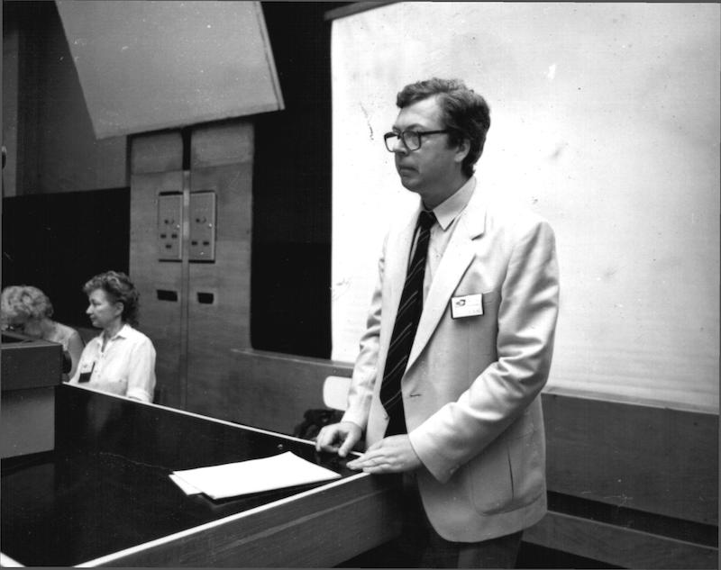
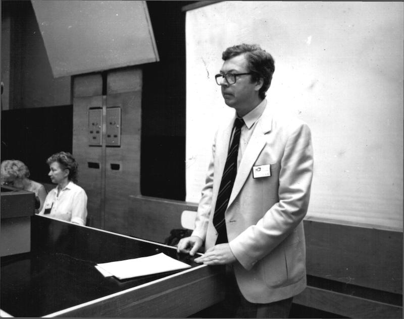
Одним из приглашенных специалистов был профессор Владимир Григорьевич Гак, которому я показал свои наработки по докторской диссертации. Владимир Григорьевич одобрил тему (семантико-функциональный синтаксис), дал несколько советов и высказал пожелание скорее увидеть работу в законченном виде. Однако в силу ряда обстоятельств, о некоторых из которых я скажу позже, диссертация была представлена Владимиру Григорьевичу для оппонирования только спустя много лет.
Живя в Венгрии со всей семьей (там у нас дочь Оля пошла в школу, родился сын Дима) и много путешествуя по стране, я понял, что без знания венгерского языка не обойтись. В процессе его самостоятельно изучения я особенно заинтересовался грамматикой и включил агглютинативный венгерский язык в круг сопоставляемых в диссертации языков. Кстати, после многолетнего перерыва я недавно дважды побывал в Венгрии – в Российском культурном центре в Будапеште (вместе с сыном – показал ему его «малую родину») и в Сомбатхее, а в 2015 году у нас на кафедре вновь появились венгерские стажеры (см. фото в разделе НОВОСТИ на сайте).
Вернувшись осенью 1987 года домой, я с энтузиазмом приступил к работе над текстом докторской диссертации, но в стране уже вовсю бушевала «перестройка», потом произошел распад Советского Союза, полетела в пропасть экономика, «бюджетникам» практически перестали платить зарплату, и главной моей задачей стало простое выживание нашей семьи. Работа «на износ» и поддержка со стороны моих родителей помогли нам пережить, как сейчас говорят, «лихие» 90-е годы. Однако было не до серьезных научных исследований, только в редкие моменты кое-что писалось «в стол», поэтому в хронологическом списке моих публикаций есть пробел.
Только в 1997 году я смог, наконец, возобновить работу над диссертацией. Всей семьей вскладчину купили мне первый компьютер, я быстро им овладел и потом еще долго модернизировал (снова пригодились навыки радиолюбителя). Текст диссертации набирал и форматировал сам, потом сам сверстал монографию.
В июне 1999 года состоялась защита. В качестве ведущей организации выступил отдел теории грамматики Института лингвистических исследований РАН (руководитель – член-корр. РАН Александр Владимирович Бондарко), а одним из оппонентов был утвержден профессор Владимир Григорьевич Гак.
Высокая оценка работы ведущими специалистами страны придала мне новые силы, я стал много публиковаться, участвовать в конференциях, разработал несколько учебных пособий и через три года стал профессором. Когда в 2002 году стала вакантной должность заведующего кафедрой, на которой я работал все это время, меня избрали ее заведующим.
Свое шестидесятилетие я встретил, имея неплохой научный багаж.

В последние годы к нам вновь стали приходить молодые люди, желающие преподавать и заниматься наукой. Сейчас на кафедре уже работают несколько моих учеников, складывается научная школа семантико-функционального сопоставительного синтаксиса русского и других европейских языков.

Постоянно расширяются и укрепляются творческие связи кафедры с «родственными» кафедрами ведущих университетов страны и зарубежья.
Интересующихся актуальными событиями в моей и кафедральной жизни я отсылаю к разделу НОВОСТИ.